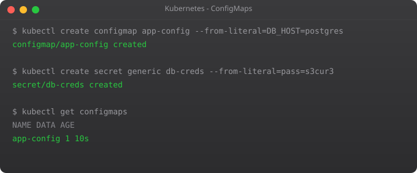

Every application needs configuration. Database URLs, API keys, log levels, feature flags, timeout values — all of this needs to live somewhere. The wrong answer is to bake it into the Docker image. The moment you do that, you need a different image for development, staging, and production. You need to rebuild the image every time a config value changes. And heaven forbid someone accidentally pushes a production database password into a public Docker Hub repository. I have seen this happen.
Kubernetes solves this cleanly with two objects: ConfigMaps and Secrets. ConfigMaps hold regular configuration data. Secrets hold sensitive data. Both can be injected into pods as environment variables or as files — without touching the container image. The image stays the same across all environments; only the configuration changes.
This pattern — separating configuration from code — is one of the twelve-factor app principles, and Kubernetes makes it the natural default.
A ConfigMap is a key-value store for configuration data. You can put database hostnames, log levels, API endpoint URLs, configuration file contents — anything that is not a password or private key.
# Create ConfigMap with literal values
kubectl create configmap app-config \
--from-literal=DATABASE_HOST=postgres-service \
--from-literal=LOG_LEVEL=info \
--from-literal=APP_ENV=production
# View the ConfigMap
kubectl get configmap app-config
kubectl describe configmap app-config
# View as YAML
kubectl get configmap app-config -o yamlapiVersion: v1
kind: ConfigMap
metadata:
name: app-config
data:
DATABASE_HOST: "postgres-service"
LOG_LEVEL: "info"
APP_ENV: "production"
MAX_CONNECTIONS: "100"
# Multi-line config file as a ConfigMap entry
app.properties: |
server.port=8080
server.timeout=30s
cache.ttl=3600apiVersion: apps/v1
kind: Deployment
metadata:
name: my-app
spec:
replicas: 2
selector:
matchLabels:
app: my-app
template:
metadata:
labels:
app: my-app
spec:
containers:
- name: my-app
image: my-app:1.0
# Inject specific keys as env vars
env:
- name: DATABASE_HOST
valueFrom:
configMapKeyRef:
name: app-config
key: DATABASE_HOST
- name: LOG_LEVEL
valueFrom:
configMapKeyRef:
name: app-config
key: LOG_LEVEL
# Or inject the entire ConfigMap at once
envFrom:
- configMapRef:
name: app-configSometimes your application needs configuration as a file, not environment variables — for example, nginx.conf, application.yml, or .env files.
spec:
containers:
- name: my-app
image: my-app:1.0
volumeMounts:
- name: config-volume
mountPath: /etc/config
volumes:
- name: config-volume
configMap:
name: app-configThis mounts the ConfigMap as a directory at /etc/config. Each key in the ConfigMap becomes a file in that directory. The multi-line app.properties key becomes the file /etc/config/app.properties. When you update the ConfigMap, Kubernetes automatically updates the file inside the running pod within about 60 seconds — no restart needed.
Secrets work exactly like ConfigMaps but for sensitive data. The values are base64-encoded (not encrypted — more on this later). Kubernetes treats Secrets differently: it only sends a Secret to a node when a pod on that node needs it, stores them in memory rather than writing to disk where possible, and gives you more granular RBAC controls over who can access them.
# Create from literals (Kubernetes will base64-encode automatically)
kubectl create secret generic db-credentials \
--from-literal=DB_PASSWORD=mysecretpassword \
--from-literal=DB_USERNAME=admin
# View the secret (values will be base64-encoded)
kubectl get secret db-credentials -o yaml
# Decode a value
kubectl get secret db-credentials -o jsonpath='{.data.DB_PASSWORD}' | base64 --decodeapiVersion: v1
kind: Secret
metadata:
name: db-credentials
type: Opaque
data:
# echo -n "mysecretpassword" | base64
DB_PASSWORD: bXlzZWNyZXRwYXNzd29yZA==
DB_USERNAME: YWRtaW4=spec:
containers:
- name: my-app
image: my-app:1.0
env:
- name: DB_PASSWORD
valueFrom:
secretKeyRef:
name: db-credentials
key: DB_PASSWORD
- name: DB_USERNAME
valueFrom:
secretKeyRef:
name: db-credentials
key: DB_USERNAMEspec:
containers:
- name: my-app
image: my-app:1.0
volumeMounts:
- name: secret-volume
mountPath: /etc/secrets
readOnly: true
volumes:
- name: secret-volume
secret:
secretName: db-credentialsI want to be honest about something that a lot of tutorials gloss over. Kubernetes Secrets are base64-encoded, not encrypted. Anyone who can run kubectl get secret can decode the values in seconds. The security of Secrets depends entirely on your RBAC configuration — who is allowed to read secrets in which namespaces.
For production systems, never commit Secret YAML files to Git. Instead, use one of these approaches:
For our tutorial series, using regular Secrets is fine. In the production deployment chapter (Part 12), we will discuss proper secret management.
apiVersion: v1
kind: ConfigMap
metadata:
name: webapp-config
data:
APP_ENV: "production"
LOG_LEVEL: "info"
DB_HOST: "postgres-service"
DB_PORT: "5432"
---
apiVersion: v1
kind: Secret
metadata:
name: webapp-secrets
type: Opaque
data:
DB_PASSWORD: cGFzc3dvcmQxMjM=
JWT_SECRET: c2VjcmV0a2V5aGVyZQ==
---
apiVersion: apps/v1
kind: Deployment
metadata:
name: webapp
spec:
replicas: 3
selector:
matchLabels:
app: webapp
template:
metadata:
labels:
app: webapp
spec:
containers:
- name: webapp
image: webapp:2.0
envFrom:
- configMapRef:
name: webapp-config
- secretRef:
name: webapp-secrets
ports:
- containerPort: 3000kubectl apply -f complete-app.yaml
# Verify the pod has the env vars
kubectl exec -it deployment/webapp -- env | grep -E 'APP_ENV|LOG_LEVEL|DB_'# Edit the ConfigMap directly
kubectl edit configmap webapp-config
# Or apply an updated YAML file
kubectl apply -f updated-config.yaml
# Trigger a rolling restart to pick up new env vars
kubectl rollout restart deployment/webappYour applications now have proper configuration management. But there is still a major gap: storage. Your pods are stateless right now — if a pod restarts, all its data is lost. This is fine for stateless web servers, but not for databases, file uploads, or any data that needs to persist.
In Part 6, we tackle persistent storage in Kubernetes — Volumes, PersistentVolumes, and PersistentVolumeClaims. This is where we start running stateful workloads like databases in Kubernetes.
ConfigMap stores plain-text non-sensitive config. Secret stores sensitive data encoded in base64. Both inject into pods the same way, but Secrets get tighter access controls and are handled more carefully by Kubernetes internals.
Never store raw Secret YAML in Git — base64 is not encryption, anyone can decode it. Use Sealed Secrets or External Secrets Operator to safely manage secrets in GitOps workflows.
File-mounted ConfigMaps update automatically within ~60 seconds. Environment variable ConfigMaps require a pod restart: kubectl rollout restart deployment/your-app.
Yes. Any pod in the same namespace can reference the same ConfigMap. This is useful for shared settings like log levels, database host names, or environment flags across multiple services.
1MB total. This is an etcd limitation. For larger configs, download them via init containers from object storage or use a dedicated configuration management system.